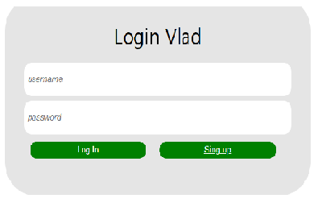
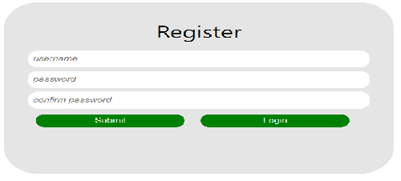
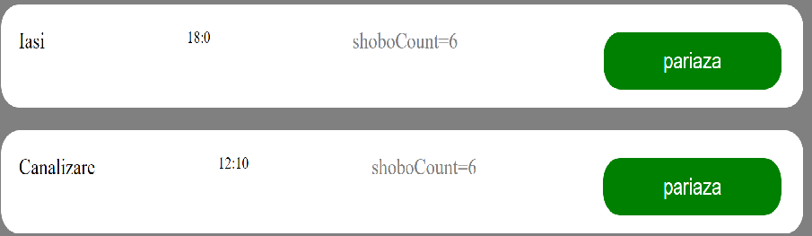
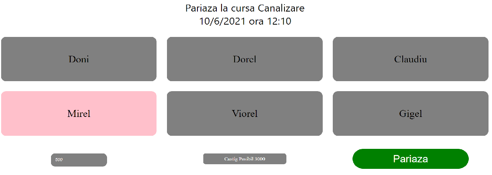
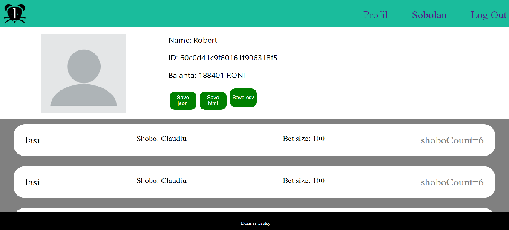
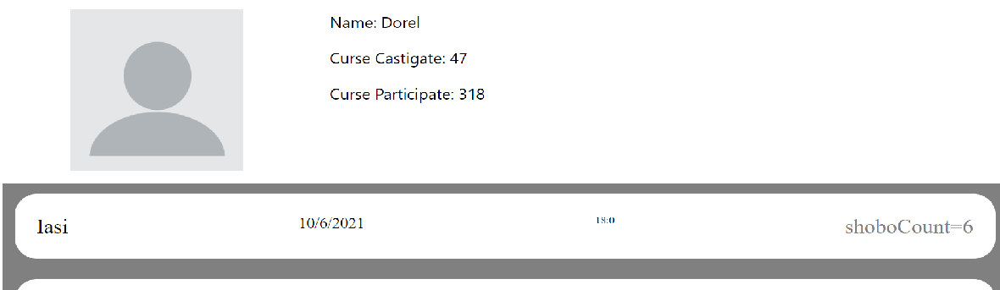

AUTORI
- Sucurei L. Robert - Pavel
- Iordache G. Dan Adrian
Introducere in site
Front-endul
BetR! (Bet on Rats) reprezinta o aplicatie Web ce permite utilizatorilor autentificati sa plaseze pariuri pe curse de sobolani.
Sigla siteului (utilizata in format png):

Paginile site-ului:
1.Login Page
- 
-
-Doua butoane:
- -“Log in”, care permite logarea utilizatorului si trimiterea utilizatorului la pagina curselor.
- -“Sing Up”, care trimite utilizatorul la pagina de inregistrare.
2. Sign-Up Page
- 
-
-Trei campuri:
- -"Username", trebuie sa fie un username nefolosit pentru a se putea crea contul.
- -“Password”, parola utiizatorul.
- -"Confirm Password"
-Doua butoane:
- -“Submit”, pentru a se crea contul cu datele introduse.
- -“Login”, care trimite utilizatorul la pagina de logare.
3. Main page
Aceasta reprezinta pagina pe care userul, odata logat, poate sa vada lista cu cursele ce vor avea loc in ziua curenta. Detaliile pastrate de o cursa sunt: numele, ora la care incepe cursa, numarul de sobolani ce vor participa la cursa.
Odata apasat butonul "Pariaza", se va deschide pagina de Betting, unde vom putea alege sobolanul pe care sa pariem.
4. Betting Page
Pe aceasta pagina, utilizatorul poate sa aleaga unul din cei 6 sobolani care participa la cursa.
Poate sa introduca suma de bani pe care sa o parieze.
5.Profile Page
Pe aceasta pagina se pot evidentia datele utilizatorului cat si cursele la care utilizatorul a pariat in trecut.
Aici sunt prezente si butoanele "Save Json", "Save HTML", "Save CSV"
6.Pagina cu Sobolanii
Din aceasta pagina se poate vedea fiecare sobolan fiind afisate datele sale(nume, curse jucate, curse castigate).
Odata apasat pe butonul "Vezi detalii" se va intra pe profilul sobolanului respectiv.

Headerul:
Odata ce userul este logat:
Headerul va contine in partea stanga iconita site-ului, care odata apasata ne va duce mereu la pagina cu curse.
Iar in partea dreapta butoanele Profil(pagina profilului), Sobolan(lista cu toti sobolanii), Log Out(delogare) si Save calendar(iCalendar)
Back-endul
Login si Sign-Up
Se efectueaza unul dintre aceste requesturi(Login sau Sign-Up), se creeaza un JWT unde se va tine minte un token pentru a mentine userul autentificat pana la delogare.
Baza de Date
Folosim MongoDB pentru a pastra datele despre sobolani, curse, utilizatori si pariurile.